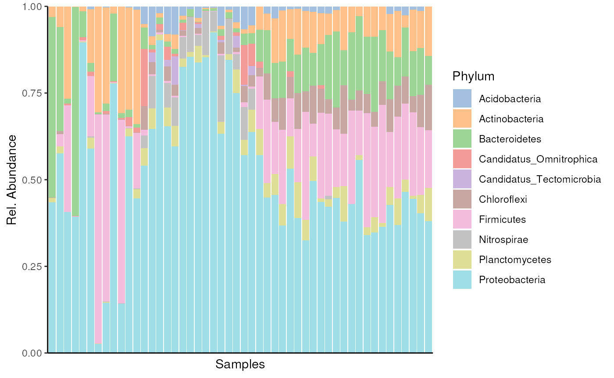
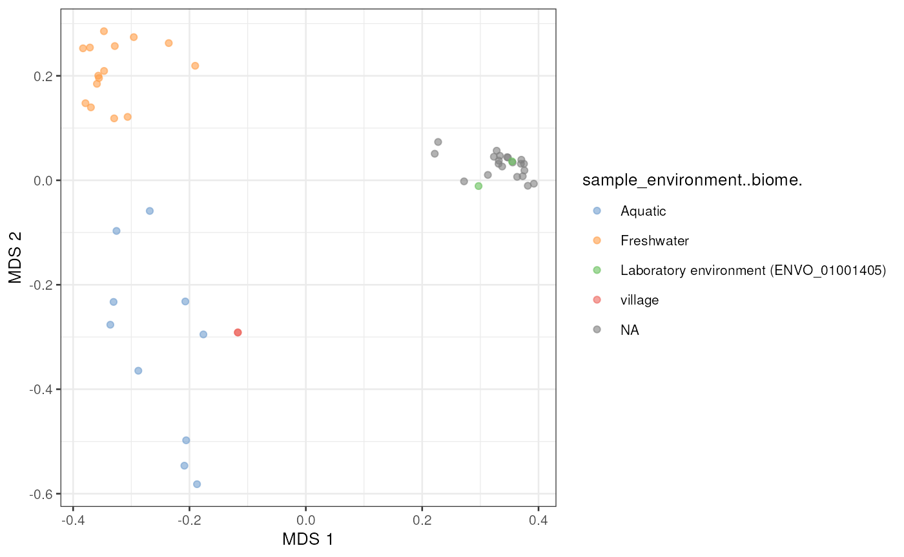

Introduction
MGnifyR is a package designed to ease access to the
EBI’s MGnify resource,
allowing searching and retrieval of multiple datasets for downstream
analysis.
The latest version of MGnifyR seamlessly integrates with the miaverse framework providing access to cutting-edge tools in microbiome down-stream analytics.
Installation
MGnifyR is hosted on Bioconductor, and can be installed
using via BiocManager.
BiocManager::install(MGnifyR)Load MGnifyR package
Once installed, MGnifyR is made available in the usual
way.
library(MGnifyR)
#> Loading required package: mia
#> Loading required package: SummarizedExperiment
#> Loading required package: MatrixGenerics
#> Loading required package: matrixStats
#>
#> Attaching package: 'MatrixGenerics'
#> The following objects are masked from 'package:matrixStats':
#>
#> colAlls, colAnyNAs, colAnys, colAvgsPerRowSet, colCollapse,
#> colCounts, colCummaxs, colCummins, colCumprods, colCumsums,
#> colDiffs, colIQRDiffs, colIQRs, colLogSumExps, colMadDiffs,
#> colMads, colMaxs, colMeans2, colMedians, colMins, colOrderStats,
#> colProds, colQuantiles, colRanges, colRanks, colSdDiffs, colSds,
#> colSums2, colTabulates, colVarDiffs, colVars, colWeightedMads,
#> colWeightedMeans, colWeightedMedians, colWeightedSds,
#> colWeightedVars, rowAlls, rowAnyNAs, rowAnys, rowAvgsPerColSet,
#> rowCollapse, rowCounts, rowCummaxs, rowCummins, rowCumprods,
#> rowCumsums, rowDiffs, rowIQRDiffs, rowIQRs, rowLogSumExps,
#> rowMadDiffs, rowMads, rowMaxs, rowMeans2, rowMedians, rowMins,
#> rowOrderStats, rowProds, rowQuantiles, rowRanges, rowRanks,
#> rowSdDiffs, rowSds, rowSums2, rowTabulates, rowVarDiffs, rowVars,
#> rowWeightedMads, rowWeightedMeans, rowWeightedMedians,
#> rowWeightedSds, rowWeightedVars
#> Loading required package: GenomicRanges
#> Loading required package: stats4
#> Loading required package: BiocGenerics
#>
#> Attaching package: 'BiocGenerics'
#> The following objects are masked from 'package:stats':
#>
#> IQR, mad, sd, var, xtabs
#> The following objects are masked from 'package:base':
#>
#> anyDuplicated, aperm, append, as.data.frame, basename, cbind,
#> colnames, dirname, do.call, duplicated, eval, evalq, Filter, Find,
#> get, grep, grepl, intersect, is.unsorted, lapply, Map, mapply,
#> match, mget, order, paste, pmax, pmax.int, pmin, pmin.int,
#> Position, rank, rbind, Reduce, rownames, sapply, setdiff, table,
#> tapply, union, unique, unsplit, which.max, which.min
#> Loading required package: S4Vectors
#>
#> Attaching package: 'S4Vectors'
#> The following object is masked from 'package:utils':
#>
#> findMatches
#> The following objects are masked from 'package:base':
#>
#> expand.grid, I, unname
#> Loading required package: IRanges
#> Loading required package: GenomeInfoDb
#> Loading required package: Biobase
#> Welcome to Bioconductor
#>
#> Vignettes contain introductory material; view with
#> 'browseVignettes()'. To cite Bioconductor, see
#> 'citation("Biobase")', and for packages 'citation("pkgname")'.
#>
#> Attaching package: 'Biobase'
#> The following object is masked from 'package:MatrixGenerics':
#>
#> rowMedians
#> The following objects are masked from 'package:matrixStats':
#>
#> anyMissing, rowMedians
#> Loading required package: SingleCellExperiment
#> Loading required package: TreeSummarizedExperiment
#> Loading required package: Biostrings
#> Loading required package: XVector
#>
#> Attaching package: 'Biostrings'
#> The following object is masked from 'package:base':
#>
#> strsplit
#> Loading required package: MultiAssayExperiment
#> Loading required package: biomformatCreate a client
All functions in MGnifyR make use of a
MgnifyClient object to keep track of the JSONAPI url, disk
cache location and user access tokens. Thus the first thing to do when
starting any analysis is to instantiate this object. The following
snippet creates this.
mg <- MgnifyClient(useCache = TRUE)
mg
#> An object of class "MgnifyClient"
#> Slot "databaseUrl":
#> [1] "https://www.ebi.ac.uk/metagenomics/api/v1"
#>
#> Slot "authTok":
#> [1] NA
#>
#> Slot "useCache":
#> [1] TRUE
#>
#> Slot "cacheDir":
#> [1] "/__w/MGnifyR/MGnifyR/vignettes/.MGnifyR_cache"
#>
#> Slot "showWarnings":
#> [1] FALSE
#>
#> Slot "clearCache":
#> [1] FALSE
#>
#> Slot "verbose":
#> [1] TRUEFunctions for fetching the data
Search data
doQuery() function can be utilized to search results
such as samples and studies from MGnify database. Below, we fetch
information drinking water samples.
# Fetch studies
samples <- doQuery(
mg,
type = "samples",
biome_name = "root:Environmental:Aquatic:Freshwater:Drinking water",
max.hits = 10)The result is a table containing accession IDs and description – in this case – on samples.
head(samples)
#> biosample accession sample-desc
#> ERS14399436 SAMEA112288610 ERS14399436 biofilm
#> ERS14399429 SAMEA112288603 ERS14399429 biofilm
#> ERS14399431 SAMEA112288605 ERS14399431 biomass
#> ERS14399428 SAMEA112288602 ERS14399428 biofilm
#> ERS14399416 SAMEA112288590 ERS14399416 biofilm
#> ERS14399423 SAMEA112288597 ERS14399423 biofilm
#> environment-biome
#> ERS14399436 Laboratory environment (ENVO_01001405)
#> ERS14399429 Laboratory environment (ENVO_01001405)
#> ERS14399431 <NA>
#> ERS14399428 <NA>
#> ERS14399416 <NA>
#> ERS14399423 <NA>
#> environment-feature
#> ERS14399436 Laboratory environment (ENVO_01001405)
#> ERS14399429 Laboratory environment (ENVO_01001405)
#> ERS14399431 <NA>
#> ERS14399428 <NA>
#> ERS14399416 <NA>
#> ERS14399423 <NA>
#> environment-material sample-name sample-alias
#> ERS14399436 Biofilm material (ENVO:01000156) GREEN68 GREEN68
#> ERS14399429 Biofilm material (ENVO:01000156) GREEN61 GREEN61
#> ERS14399431 <NA> GREEN63 GREEN63
#> ERS14399428 <NA> GREEN60 GREEN60
#> ERS14399416 <NA> GREEN48 GREEN48
#> ERS14399423 <NA> GREEN55 GREEN55
#> last-update project name
#> ERS14399436 2023-08-07T11:15:24 ARGs study in bioelectrochemical remediation
#> ERS14399429 2023-08-07T10:52:31 ARGs study in bioelectrochemical remediation
#> ERS14399431 2023-04-23T08:53:19 ARGs study in bioelectrochemical remediation
#> ERS14399428 2023-04-23T07:57:35 ARGs study in bioelectrochemical remediation
#> ERS14399416 2023-04-23T06:14:08 ARGs study in bioelectrochemical remediation
#> ERS14399423 2023-04-23T05:00:17 ARGs study in bioelectrochemical remediation
#> geographic location (country and/or sea,region) collection date
#> ERS14399436 Spain 2022-09-14
#> ERS14399429 Spain 2022-09-14
#> ERS14399431 Spain 2022-09-14
#> ERS14399428 Spain 2022-09-14
#> ERS14399416 Spain 2022-09-14
#> ERS14399423 Spain 2022-09-14
#> environment (biome)
#> ERS14399436 Laboratory environment (ENVO_01001405)
#> ERS14399429 Laboratory environment (ENVO_01001405)
#> ERS14399431 <NA>
#> ERS14399428 <NA>
#> ERS14399416 <NA>
#> ERS14399423 <NA>
#> environment (feature)
#> ERS14399436 Laboratory environment (ENVO_01001405)
#> ERS14399429 Laboratory environment (ENVO_01001405)
#> ERS14399431 <NA>
#> ERS14399428 <NA>
#> ERS14399416 <NA>
#> ERS14399423 <NA>
#> environment (material) ENA checklist acc_type
#> ERS14399436 Biofilm material (ENVO:01000156) ERC000023 samples
#> ERS14399429 Biofilm material (ENVO:01000156) ERC000023 samples
#> ERS14399431 <NA> ERC000023 samples
#> ERS14399428 <NA> ERC000023 samples
#> ERS14399416 <NA> ERC000023 samples
#> ERS14399423 <NA> ERC000023 samples
#> studies biome
#> ERS14399436 MGYS00006211 root:Environmental:Aquatic:Freshwater:Drinking water
#> ERS14399429 MGYS00006211 root:Environmental:Aquatic:Freshwater:Drinking water
#> ERS14399431 MGYS00006211 root:Environmental:Aquatic:Freshwater:Drinking water
#> ERS14399428 MGYS00006211 root:Environmental:Aquatic:Freshwater:Drinking water
#> ERS14399416 MGYS00006211 root:Environmental:Aquatic:Freshwater:Drinking water
#> ERS14399423 MGYS00006211 root:Environmental:Aquatic:Freshwater:Drinking water
#> type collection-date latitude longitude investigation type
#> ERS14399436 samples <NA> <NA> <NA> <NA>
#> ERS14399429 samples <NA> <NA> <NA> <NA>
#> ERS14399431 samples 2022-09-14 <NA> <NA> <NA>
#> ERS14399428 samples 2022-09-14 <NA> <NA> <NA>
#> ERS14399416 samples 2022-09-14 <NA> <NA> <NA>
#> ERS14399423 samples 2022-09-14 <NA> <NA> <NA>
#> geographic location (longitude) environmental package
#> ERS14399436 <NA> <NA>
#> ERS14399429 <NA> <NA>
#> ERS14399431 <NA> <NA>
#> ERS14399428 <NA> <NA>
#> ERS14399416 <NA> <NA>
#> ERS14399423 <NA> <NA>
#> sequencing method geographic location (latitude) analysis-completed
#> ERS14399436 <NA> <NA> <NA>
#> ERS14399429 <NA> <NA> <NA>
#> ERS14399431 <NA> <NA> <NA>
#> ERS14399428 <NA> <NA> <NA>
#> ERS14399416 <NA> <NA> <NA>
#> ERS14399423 <NA> <NA> <NA>
#> geo-loc-name instrument model
#> ERS14399436 <NA> <NA>
#> ERS14399429 <NA> <NA>
#> ERS14399431 <NA> <NA>
#> ERS14399428 <NA> <NA>
#> ERS14399416 <NA> <NA>
#> ERS14399423 <NA> <NA>Find relevent analyses accessions
Now we want to find analysis accessions. Each sample might have multiple analyses. Each analysis ID corresponds to a single run of a particular pipeline on a single sample in a single study.
analyses_accessions <- searchAnalysis(mg, "samples", samples$accession)By running the searchAnalysis() function, we get
analysis IDs of samples that we fed as an input.
head(analyses_accessions)
#> [1] "MGYA00652201" "MGYA00652185" "MGYA00643487" "MGYA00643486" "MGYA00643485"
#> [6] "MGYA00643484"Fetch metadata
We can now check the metadata to get hint of what kind of data we
have. We use getMetadata() function to fetch data based on
analysis IDs.
analyses_metadata <- getMetadata(mg, analyses_accessions)Metadata includes for example information on how analysis was conducted and what kind of samples were analyzed.
head(analyses_metadata)
#> analysis_analysis-status analysis_pipeline-version
#> MGYA00652201 completed 5.0
#> MGYA00652185 completed 5.0
#> MGYA00643487 completed 5.0
#> MGYA00643486 completed 5.0
#> MGYA00643485 completed 5.0
#> MGYA00643484 completed 5.0
#> analysis_experiment-type analysis_accession analysis_is-private
#> MGYA00652201 assembly MGYA00652201 TRUE
#> MGYA00652185 assembly MGYA00652185 TRUE
#> MGYA00643487 assembly MGYA00643487 TRUE
#> MGYA00643486 assembly MGYA00643486 TRUE
#> MGYA00643485 assembly MGYA00643485 TRUE
#> MGYA00643484 assembly MGYA00643484 TRUE
#> analysis_complete-time analysis_instrument-platform
#> MGYA00652201 2023-08-07T11:15:25 ILLUMINA
#> MGYA00652185 2023-08-07T10:52:31 ILLUMINA
#> MGYA00643487 2023-04-23T08:53:23 ILLUMINA
#> MGYA00643486 2023-04-23T07:57:38 ILLUMINA
#> MGYA00643485 2023-04-23T06:14:11 ILLUMINA
#> MGYA00643484 2023-04-23T05:00:21 ILLUMINA
#> analysis_instrument-model analysis_Submitted nucleotide sequences
#> MGYA00652201 Illumina NovaSeq 6000 223726
#> MGYA00652185 Illumina NovaSeq 6000 292409
#> MGYA00643487 Illumina NovaSeq 6000 162292
#> MGYA00643486 Illumina NovaSeq 6000 233327
#> MGYA00643485 Illumina NovaSeq 6000 318625
#> MGYA00643484 Illumina NovaSeq 6000 341952
#> analysis_Nucleotide sequences after format-specific filtering
#> MGYA00652201 223726
#> MGYA00652185 292409
#> MGYA00643487 162292
#> MGYA00643486 233327
#> MGYA00643485 318625
#> MGYA00643484 341952
#> analysis_Nucleotide sequences after length filtering
#> MGYA00652201 223726
#> MGYA00652185 292409
#> MGYA00643487 162292
#> MGYA00643486 233327
#> MGYA00643485 318625
#> MGYA00643484 341952
#> analysis_Nucleotide sequences after undetermined bases filtering
#> MGYA00652201 223726
#> MGYA00652185 292409
#> MGYA00643487 162292
#> MGYA00643486 233327
#> MGYA00643485 318625
#> MGYA00643484 341952
#> analysis_Reads with predicted CDS
#> MGYA00652201 223146
#> MGYA00652185 291506
#> MGYA00643487 159860
#> MGYA00643486 232596
#> MGYA00643485 317405
#> MGYA00643484 341116
#> analysis_Reads with predicted RNA
#> MGYA00652201 3008
#> MGYA00652185 4472
#> MGYA00643487 3518
#> MGYA00643486 3513
#> MGYA00643485 5420
#> MGYA00643484 4849
#> analysis_Reads with InterProScan match analysis_Predicted CDS
#> MGYA00652201 182364 489141
#> MGYA00652185 241005 674191
#> MGYA00643487 124819 519411
#> MGYA00643486 192842 542005
#> MGYA00643485 259359 893435
#> MGYA00643484 280422 826459
#> analysis_Predicted CDS with InterProScan match
#> MGYA00652201 331022
#> MGYA00652185 472354
#> MGYA00643487 330317
#> MGYA00643486 379304
#> MGYA00643485 585352
#> MGYA00643484 572175
#> analysis_Total InterProScan matches
#> MGYA00652201 1035846
#> MGYA00652185 1520845
#> MGYA00643487 1134950
#> MGYA00643486 1221863
#> MGYA00643485 1928199
#> MGYA00643484 1847000
#> analysis_Predicted SSU sequences analysis_Predicted LSU sequences
#> MGYA00652201 141 222
#> MGYA00652185 268 394
#> MGYA00643487 217 330
#> MGYA00643486 199 345
#> MGYA00643485 273 431
#> MGYA00643484 243 399
#> analysis_acc_type study_attributes.accession
#> MGYA00652201 analysis-jobs MGYS00006211
#> MGYA00652185 analysis-jobs MGYS00006211
#> MGYA00643487 analysis-jobs MGYS00006211
#> MGYA00643486 analysis-jobs MGYS00006211
#> MGYA00643485 analysis-jobs MGYS00006211
#> MGYA00643484 analysis-jobs MGYS00006211
#> study_attributes.bioproject study_attributes.samples-count
#> MGYA00652201 PRJEB58755 23
#> MGYA00652185 PRJEB58755 23
#> MGYA00643487 PRJEB58755 23
#> MGYA00643486 PRJEB58755 23
#> MGYA00643485 PRJEB58755 23
#> MGYA00643484 PRJEB58755 23
#> study_attributes.is-private study_attributes.secondary-accession
#> MGYA00652201 FALSE ERP143823
#> MGYA00652185 FALSE ERP143823
#> MGYA00643487 FALSE ERP143823
#> MGYA00643486 FALSE ERP143823
#> MGYA00643485 FALSE ERP143823
#> MGYA00643484 FALSE ERP143823
#> study_attributes.centre-name
#> MGYA00652201 Leitat Technological Center
#> MGYA00652185 Leitat Technological Center
#> MGYA00643487 Leitat Technological Center
#> MGYA00643486 Leitat Technological Center
#> MGYA00643485 Leitat Technological Center
#> MGYA00643484 Leitat Technological Center
#> study_attributes.study-abstract
#> MGYA00652201 Elimination of several antibiotics in water by bioelectrochemical cells. The main objective is study how the concentration of antibiotic resistant genes (ARG) changed depending on the voltage application.
#> MGYA00652185 Elimination of several antibiotics in water by bioelectrochemical cells. The main objective is study how the concentration of antibiotic resistant genes (ARG) changed depending on the voltage application.
#> MGYA00643487 Elimination of several antibiotics in water by bioelectrochemical cells. The main objective is study how the concentration of antibiotic resistant genes (ARG) changed depending on the voltage application.
#> MGYA00643486 Elimination of several antibiotics in water by bioelectrochemical cells. The main objective is study how the concentration of antibiotic resistant genes (ARG) changed depending on the voltage application.
#> MGYA00643485 Elimination of several antibiotics in water by bioelectrochemical cells. The main objective is study how the concentration of antibiotic resistant genes (ARG) changed depending on the voltage application.
#> MGYA00643484 Elimination of several antibiotics in water by bioelectrochemical cells. The main objective is study how the concentration of antibiotic resistant genes (ARG) changed depending on the voltage application.
#> study_attributes.study-name
#> MGYA00652201 ARGs study in bioelectrochemical remediation
#> MGYA00652185 ARGs study in bioelectrochemical remediation
#> MGYA00643487 ARGs study in bioelectrochemical remediation
#> MGYA00643486 ARGs study in bioelectrochemical remediation
#> MGYA00643485 ARGs study in bioelectrochemical remediation
#> MGYA00643484 ARGs study in bioelectrochemical remediation
#> study_attributes.data-origination study_attributes.last-update
#> MGYA00652201 SUBMITTED 2023-08-07T11:15:24
#> MGYA00652185 SUBMITTED 2023-08-07T11:15:24
#> MGYA00643487 SUBMITTED 2023-08-07T11:15:24
#> MGYA00643486 SUBMITTED 2023-08-07T11:15:24
#> MGYA00643485 SUBMITTED 2023-08-07T11:15:24
#> MGYA00643484 SUBMITTED 2023-08-07T11:15:24
#> study_accession study_acc_type sample_biosample sample_accession
#> MGYA00652201 MGYS00006211 studies SAMEA112288610 ERS14399436
#> MGYA00652185 MGYS00006211 studies SAMEA112288603 ERS14399429
#> MGYA00643487 MGYS00006211 studies SAMEA112288605 ERS14399431
#> MGYA00643486 MGYS00006211 studies SAMEA112288602 ERS14399428
#> MGYA00643485 MGYS00006211 studies SAMEA112288590 ERS14399416
#> MGYA00643484 MGYS00006211 studies SAMEA112288597 ERS14399423
#> sample_sample-desc sample_environment-biome
#> MGYA00652201 biofilm Laboratory environment (ENVO_01001405)
#> MGYA00652185 biofilm Laboratory environment (ENVO_01001405)
#> MGYA00643487 biomass <NA>
#> MGYA00643486 biofilm <NA>
#> MGYA00643485 biofilm <NA>
#> MGYA00643484 biofilm <NA>
#> sample_environment-feature
#> MGYA00652201 Laboratory environment (ENVO_01001405)
#> MGYA00652185 Laboratory environment (ENVO_01001405)
#> MGYA00643487 <NA>
#> MGYA00643486 <NA>
#> MGYA00643485 <NA>
#> MGYA00643484 <NA>
#> sample_environment-material sample_sample-name
#> MGYA00652201 Biofilm material (ENVO:01000156) GREEN68
#> MGYA00652185 Biofilm material (ENVO:01000156) GREEN61
#> MGYA00643487 <NA> GREEN63
#> MGYA00643486 <NA> GREEN60
#> MGYA00643485 <NA> GREEN48
#> MGYA00643484 <NA> GREEN55
#> sample_sample-alias sample_last-update
#> MGYA00652201 GREEN68 2023-08-07T11:15:24
#> MGYA00652185 GREEN61 2023-08-07T10:52:31
#> MGYA00643487 GREEN63 2023-04-23T08:53:19
#> MGYA00643486 GREEN60 2023-04-23T07:57:35
#> MGYA00643485 GREEN48 2023-04-23T06:14:08
#> MGYA00643484 GREEN55 2023-04-23T05:00:17
#> sample_project name
#> MGYA00652201 ARGs study in bioelectrochemical remediation
#> MGYA00652185 ARGs study in bioelectrochemical remediation
#> MGYA00643487 ARGs study in bioelectrochemical remediation
#> MGYA00643486 ARGs study in bioelectrochemical remediation
#> MGYA00643485 ARGs study in bioelectrochemical remediation
#> MGYA00643484 ARGs study in bioelectrochemical remediation
#> sample_geographic location (country and/or sea,region)
#> MGYA00652201 Spain
#> MGYA00652185 Spain
#> MGYA00643487 Spain
#> MGYA00643486 Spain
#> MGYA00643485 Spain
#> MGYA00643484 Spain
#> sample_collection date sample_environment (biome)
#> MGYA00652201 2022-09-14 Laboratory environment (ENVO_01001405)
#> MGYA00652185 2022-09-14 Laboratory environment (ENVO_01001405)
#> MGYA00643487 2022-09-14 <NA>
#> MGYA00643486 2022-09-14 <NA>
#> MGYA00643485 2022-09-14 <NA>
#> MGYA00643484 2022-09-14 <NA>
#> sample_environment (feature)
#> MGYA00652201 Laboratory environment (ENVO_01001405)
#> MGYA00652185 Laboratory environment (ENVO_01001405)
#> MGYA00643487 <NA>
#> MGYA00643486 <NA>
#> MGYA00643485 <NA>
#> MGYA00643484 <NA>
#> sample_environment (material) sample_ENA checklist
#> MGYA00652201 Biofilm material (ENVO:01000156) ERC000023
#> MGYA00652185 Biofilm material (ENVO:01000156) ERC000023
#> MGYA00643487 <NA> ERC000023
#> MGYA00643486 <NA> ERC000023
#> MGYA00643485 <NA> ERC000023
#> MGYA00643484 <NA> ERC000023
#> sample_acc_type assembly_accession
#> MGYA00652201 samples ERZ20300939
#> MGYA00652185 samples ERZ20300942
#> MGYA00643487 samples ERZ16299686
#> MGYA00643486 samples ERZ16299690
#> MGYA00643485 samples ERZ16299649
#> MGYA00643484 samples ERZ16299683
#> biome_string
#> MGYA00652201 root:Environmental:Aquatic:Freshwater:Drinking water
#> MGYA00652185 root:Environmental:Aquatic:Freshwater:Drinking water
#> MGYA00643487 root:Environmental:Aquatic:Freshwater:Drinking water
#> MGYA00643486 root:Environmental:Aquatic:Freshwater:Drinking water
#> MGYA00643485 root:Environmental:Aquatic:Freshwater:Drinking water
#> MGYA00643484 root:Environmental:Aquatic:Freshwater:Drinking water
#> sample_collection-date sample_latitude sample_longitude
#> MGYA00652201 <NA> <NA> <NA>
#> MGYA00652185 <NA> <NA> <NA>
#> MGYA00643487 2022-09-14 <NA> <NA>
#> MGYA00643486 2022-09-14 <NA> <NA>
#> MGYA00643485 2022-09-14 <NA> <NA>
#> MGYA00643484 2022-09-14 <NA> <NA>
#> sample_investigation type sample_geographic location (longitude)
#> MGYA00652201 <NA> <NA>
#> MGYA00652185 <NA> <NA>
#> MGYA00643487 <NA> <NA>
#> MGYA00643486 <NA> <NA>
#> MGYA00643485 <NA> <NA>
#> MGYA00643484 <NA> <NA>
#> sample_environmental package sample_sequencing method
#> MGYA00652201 <NA> <NA>
#> MGYA00652185 <NA> <NA>
#> MGYA00643487 <NA> <NA>
#> MGYA00643486 <NA> <NA>
#> MGYA00643485 <NA> <NA>
#> MGYA00643484 <NA> <NA>
#> sample_geographic location (latitude) run_accession
#> MGYA00652201 <NA> <NA>
#> MGYA00652185 <NA> <NA>
#> MGYA00643487 <NA> <NA>
#> MGYA00643486 <NA> <NA>
#> MGYA00643485 <NA> <NA>
#> MGYA00643484 <NA> <NA>
#> sample_analysis-completed sample_geo-loc-name
#> MGYA00652201 <NA> <NA>
#> MGYA00652185 <NA> <NA>
#> MGYA00643487 <NA> <NA>
#> MGYA00643486 <NA> <NA>
#> MGYA00643485 <NA> <NA>
#> MGYA00643484 <NA> <NA>
#> sample_instrument model
#> MGYA00652201 <NA>
#> MGYA00652185 <NA>
#> MGYA00643487 <NA>
#> MGYA00643486 <NA>
#> MGYA00643485 <NA>
#> MGYA00643484 <NA>Fetch microbiome data
After we have selected the data to fetch, we can use
getResult()
The output is TreeSummarizedExperiment
(TreeSE) or MultiAssayExperiment
(MAE) depending on the dataset. If the dataset includes
only taxonomic profiling data, the output is a single
TreeSE. If dataset includes also functional data, the
output is multiple TreeSE objects that are linked together
by utilizing MAE.
mae <- getResult(mg, accession = analyses_accessions)
mae
#> A MultiAssayExperiment object of 6 listed
#> experiments with user-defined names and respective classes.
#> Containing an ExperimentList class object of length 6:
#> [1] microbiota: TreeSummarizedExperiment with 3506 rows and 50 columns
#> [2] go-slim: TreeSummarizedExperiment with 116 rows and 38 columns
#> [3] go-terms: TreeSummarizedExperiment with 3133 rows and 38 columns
#> [4] interpro-identifiers: TreeSummarizedExperiment with 18223 rows and 38 columns
#> [5] taxonomy: TreeSummarizedExperiment with 3617 rows and 50 columns
#> [6] taxonomy-lsu: TreeSummarizedExperiment with 3378 rows and 42 columns
#> Functionality:
#> experiments() - obtain the ExperimentList instance
#> colData() - the primary/phenotype DataFrame
#> sampleMap() - the sample coordination DataFrame
#> `$`, `[`, `[[` - extract colData columns, subset, or experiment
#> *Format() - convert into a long or wide DataFrame
#> assays() - convert ExperimentList to a SimpleList of matrices
#> exportClass() - save data to flat filesYou can get access to individual TreeSE object in
MAE by specifying index or name.
mae[[1]]
#> class: TreeSummarizedExperiment
#> dim: 3506 50
#> metadata(0):
#> assays(1): counts
#> rownames(3506): 82608 62797 ... 5820 6794
#> rowData names(9): Kingdom Phylum ... taxonomy1 taxonomy
#> colnames(50): MGYA00144458 MGYA00144419 ... MGYA00652185 MGYA00652201
#> colData names(64): analysis_analysis.status analysis_pipeline.version
#> ... sample_geo.loc.name sample_instrument.model
#> reducedDimNames(0):
#> mainExpName: NULL
#> altExpNames(0):
#> rowLinks: NULL
#> rowTree: NULL
#> colLinks: NULL
#> colTree: NULLTreeSE object is uniquely positioned to support
SummarizedExperiment-based microbiome data manipulation and
visualization. Moreover, it enables access to miaverse
tools. For example, we can estimate diversity of samples…
mae[[1]] <- estimateDiversity(mae[[1]], index = "shannon")
library(scater)
#> Loading required package: scuttle
#> Loading required package: ggplot2
plotColData(mae[[1]], "shannon", x = "sample_environment..biome.")… and plot abundances of most abundant phyla.
# Agglomerate data
altExps(mae[[1]]) <- splitByRanks(mae[[1]])
library(miaViz)
#> Loading required package: ggraph
# Plot top taxa
top_taxa <- getTopFeatures(altExp(mae[[1]], "Phylum"), 10)
plotAbundance(altExp(mae[[1]], "Phylum")[top_taxa, ], rank = "Phylum")
We can also perform other analyses such as principal component analysis to microbial profiling data by utilizing miaverse tools.
# Apply relative transformation
mae[[1]] <- transformAssay(mae[[1]], method = "relabundance")
# Perform PCoA
mae[[1]] <- runMDS(
mae[[1]], assay.type = "relabundance",
FUN = vegan::vegdist, method = "bray")
# Plot
plotReducedDim(
mae[[1]], "MDS", colour_by = "sample_environment..biome.")
Fetch raw files
While getResult() can be utilized to retrieve microbial
profiling data, getData() can be used more flexibly to
retrieve any kind of data from the database. It returns data as simple
data.frame or list format.
publications <- getData(mg, type = "publications")
head(publications)
#> document.id type id attributes.pubmed-id
#> 1 1 publications 36363763 36363763
#> 2 2 publications 35614211 35614211
#> 3 3 publications 35614182 35614182
#> 4 4 publications 35208912 35208912
#> 5 5 publications 35178461 35178461
#> 6 6 publications 35154023 35154023
#> attributes.pubmed-central-id
#> 1 NA
#> 2 NA
#> 3 NA
#> 4 NA
#> 5 NA
#> 6 NA
#> attributes.pub-title
#> 1 Agricultural Crops Grown in Laboratory Conditions on Chernevaya Taiga Soil Demonstrate Unique Composition of the Rhizosphere Microbiota.
#> 2 Discovery of bioactive microbial gene products in inflammatory bowel disease.
#> 3 Lake microbiome and trophy fluctuations of the ancient hemp rettery.
#> 4 Mycobiome-Host Coevolution? The Mycobiome of Ancestral Human Populations Seems to Be Different and Less Diverse Than Those of Extant Native and Urban-Industrialized Populations.
#> 5 Effects of triclosan on bacterial community composition and <i>Vibrio</i> populations in natural seawater microcosms.
#> 6 Field Site-Specific Effects of an <i>Azospirillum</i> Seed Inoculant on Key Microbial Functional Groups in the Rhizosphere.
#> attributes.pub-abstract
#> 1 NA
#> 2 NA
#> 3 NA
#> 4 NA
#> 5 NA
#> 6 NA
#> attributes.authors
#> 1 Kravchenko I, Rayko M, Tikhonova E, Konopkin A, Abakumov E, Lapidus A.
#> 2 Zhang Y, Bhosle A, Bae S, McIver LJ, Pishchany G, Accorsi EK, Thompson KN, Arze C, Wang Y, Subramanian A, Kearney SM, Pawluk A, Plichta DR, Rahnavard A, Shafquat A, Xavier RJ, Vlamakis H, Garrett WS, Krueger A, Huttenhower C, Franzosa EA.
#> 3 Iwańska O, Latoch P, Suchora M, Pidek IA, Huber M, Bubak I, Kopik N, Kovalenko M, Gąsiorowski M, Armache JP, Starosta AL.
#> 4 Reynoso-García J, Narganes-Storde Y, Santiago-Rodriguez TM, Toranzos GA.
#> 5 Lydon KA, Glinski DA, Westrich JR, Henderson WM, Lipp EK.
#> 6 Renoud S, Vacheron J, Abrouk D, Prigent-Combaret C, Legendre L, Muller D, Moënne-Loccoz Y.
#> attributes.doi attributes.isbn
#> 1 10.3390/microorganisms10112171 2076-2607
#> 2 10.1038/s41586-022-04648-7 0028-0836; 1476-4687;
#> 3 10.1038/s41598-022-12761-w 2045-2322
#> 4 10.3390/microorganisms10020459 2076-2607
#> 5 10.1525/elementa.141 2325-1026
#> 6 10.3389/fmicb.2021.760512 1664-302x
#> attributes.published-year attributes.pub-type attributes.issue
#> 1 2022 journal article NA
#> 2 2022 research-article; journal article NA
#> 3 2022 journal article NA
#> 4 2022 journal article NA
#> 5 2017 journal article NA
#> 6 2021 journal article NA
#> attributes.volume attributes.raw-pages attributes.iso-journal
#> 1 10 2171 Microorganisms
#> 2 606 754-760 Nature
#> 3 12 8846 Sci Rep
#> 4 10 n/a Microorganisms
#> 5 5 1-16 Elementa (Wash D C)
#> 6 12 760512 Front Microbiol
#> attributes.medline-journal attributes.pub-url attributes.studies-count
#> 1 NA NA 1
#> 2 NA NA 1
#> 3 NA NA 2
#> 4 NA NA 1
#> 5 NA NA 1
#> 6 NA NA 3
#> attributes.samples-count
#> 1 5
#> 2 176
#> 3 18
#> 4 57
#> 5 24
#> 6 3
#> links.self
#> 1 https://www.ebi.ac.uk/metagenomics/api/v1/publications/36363763?format=json
#> 2 https://www.ebi.ac.uk/metagenomics/api/v1/publications/35614211?format=json
#> 3 https://www.ebi.ac.uk/metagenomics/api/v1/publications/35614182?format=json
#> 4 https://www.ebi.ac.uk/metagenomics/api/v1/publications/35208912?format=json
#> 5 https://www.ebi.ac.uk/metagenomics/api/v1/publications/35178461?format=json
#> 6 https://www.ebi.ac.uk/metagenomics/api/v1/publications/35154023?format=json
#> relationships.studies.links.related
#> 1 https://www.ebi.ac.uk/metagenomics/api/v1/publications/36363763/studies?format=json
#> 2 https://www.ebi.ac.uk/metagenomics/api/v1/publications/35614211/studies?format=json
#> 3 https://www.ebi.ac.uk/metagenomics/api/v1/publications/35614182/studies?format=json
#> 4 https://www.ebi.ac.uk/metagenomics/api/v1/publications/35208912/studies?format=json
#> 5 https://www.ebi.ac.uk/metagenomics/api/v1/publications/35178461/studies?format=json
#> 6 https://www.ebi.ac.uk/metagenomics/api/v1/publications/35154023/studies?format=json
#> relationships.samples.links.related
#> 1 https://www.ebi.ac.uk/metagenomics/api/v1/publications/36363763/samples?format=json
#> 2 https://www.ebi.ac.uk/metagenomics/api/v1/publications/35614211/samples?format=json
#> 3 https://www.ebi.ac.uk/metagenomics/api/v1/publications/35614182/samples?format=json
#> 4 https://www.ebi.ac.uk/metagenomics/api/v1/publications/35208912/samples?format=json
#> 5 https://www.ebi.ac.uk/metagenomics/api/v1/publications/35178461/samples?format=json
#> 6 https://www.ebi.ac.uk/metagenomics/api/v1/publications/35154023/samples?format=json
#> ..JSON
#> 1 publicat....
#> 2 publicat....
#> 3 publicat....
#> 4 publicat....
#> 5 publicat....
#> 6 publicat....Fetch sequence files
Finally, we can use searchFile() and
getFile() to retrieve other MGnify pipeline outputs such as
merged sequence reads, assembled contigs, and details of the functional
analyses.
With searchFile(), we can search files from the
database.
dl_urls <- searchFile(mg, analyses_accessions, type = "analyses")The returned table contains search results related to analyses that we fed as an input. The table contains information on file and also URL address from where the file can be loaded.
target_urls <- dl_urls[
dl_urls$attributes.description.label == "Predicted alpha tmRNA", ]
head(target_urls)
#> type id
#> 24 analyses ERZ20300939_alpha_tmRNA.RF01849.fasta.gz
#> 75 analyses ERZ20300942_alpha_tmRNA.RF01849.fasta.gz
#> 126 analyses ERZ16299686_alpha_tmRNA.RF01849.fasta.gz
#> 177 analyses ERZ16299690_alpha_tmRNA.RF01849.fasta.gz
#> 228 analyses ERZ16299649_alpha_tmRNA.RF01849.fasta.gz
#> 279 analyses ERZ16299683_alpha_tmRNA.RF01849.fasta.gz
#> attributes.alias attributes.file.format.name
#> 24 ERZ20300939_alpha_tmRNA.RF01849.fasta.gz FASTA
#> 75 ERZ20300942_alpha_tmRNA.RF01849.fasta.gz FASTA
#> 126 ERZ16299686_alpha_tmRNA.RF01849.fasta.gz FASTA
#> 177 ERZ16299690_alpha_tmRNA.RF01849.fasta.gz FASTA
#> 228 ERZ16299649_alpha_tmRNA.RF01849.fasta.gz FASTA
#> 279 ERZ16299683_alpha_tmRNA.RF01849.fasta.gz FASTA
#> attributes.file.format.extension attributes.file.format.compression
#> 24 fasta TRUE
#> 75 fasta TRUE
#> 126 fasta TRUE
#> 177 fasta TRUE
#> 228 fasta TRUE
#> 279 fasta TRUE
#> attributes.description.label
#> 24 Predicted alpha tmRNA
#> 75 Predicted alpha tmRNA
#> 126 Predicted alpha tmRNA
#> 177 Predicted alpha tmRNA
#> 228 Predicted alpha tmRNA
#> 279 Predicted alpha tmRNA
#> attributes.description.description
#> 24 Predicted Alphaproteobacteria transfer-messenger RNA (RF01849)
#> 75 Predicted Alphaproteobacteria transfer-messenger RNA (RF01849)
#> 126 Predicted Alphaproteobacteria transfer-messenger RNA (RF01849)
#> 177 Predicted Alphaproteobacteria transfer-messenger RNA (RF01849)
#> 228 Predicted Alphaproteobacteria transfer-messenger RNA (RF01849)
#> 279 Predicted Alphaproteobacteria transfer-messenger RNA (RF01849)
#> attributes.group.type attributes.file.checksum.checksum
#> 24 non-coding RNAs
#> 75 non-coding RNAs
#> 126 non-coding RNAs
#> 177 non-coding RNAs
#> 228 non-coding RNAs
#> 279 non-coding RNAs
#> attributes.file.checksum.checksum.algorithm
#> 24
#> 75
#> 126
#> 177
#> 228
#> 279
#> relationships.pipeline.data.type relationships.pipeline.data.id
#> 24 pipelines 5.0
#> 75 pipelines 5.0
#> 126 pipelines 5.0
#> 177 pipelines 5.0
#> 228 pipelines 5.0
#> 279 pipelines 5.0
#> relationships.pipeline.related
#> 24 https://www.ebi.ac.uk/metagenomics/api/v1/pipelines/5.0?format=json
#> 75 https://www.ebi.ac.uk/metagenomics/api/v1/pipelines/5.0?format=json
#> 126 https://www.ebi.ac.uk/metagenomics/api/v1/pipelines/5.0?format=json
#> 177 https://www.ebi.ac.uk/metagenomics/api/v1/pipelines/5.0?format=json
#> 228 https://www.ebi.ac.uk/metagenomics/api/v1/pipelines/5.0?format=json
#> 279 https://www.ebi.ac.uk/metagenomics/api/v1/pipelines/5.0?format=json
#> download_url
#> 24 https://www.ebi.ac.uk/metagenomics/api/v1/analyses/MGYA00652201/file/ERZ20300939_alpha_tmRNA.RF01849.fasta.gz
#> 75 https://www.ebi.ac.uk/metagenomics/api/v1/analyses/MGYA00652185/file/ERZ20300942_alpha_tmRNA.RF01849.fasta.gz
#> 126 https://www.ebi.ac.uk/metagenomics/api/v1/analyses/MGYA00643487/file/ERZ16299686_alpha_tmRNA.RF01849.fasta.gz
#> 177 https://www.ebi.ac.uk/metagenomics/api/v1/analyses/MGYA00643486/file/ERZ16299690_alpha_tmRNA.RF01849.fasta.gz
#> 228 https://www.ebi.ac.uk/metagenomics/api/v1/analyses/MGYA00643485/file/ERZ16299649_alpha_tmRNA.RF01849.fasta.gz
#> 279 https://www.ebi.ac.uk/metagenomics/api/v1/analyses/MGYA00643484/file/ERZ16299683_alpha_tmRNA.RF01849.fasta.gz
#> accession
#> 24 MGYA00652201
#> 75 MGYA00652185
#> 126 MGYA00643487
#> 177 MGYA00643486
#> 228 MGYA00643485
#> 279 MGYA00643484Finally, we can download the files with getFile().
# Just select a single file from the target_urls list for demonstration.
file_url <- target_urls$download_url[[1]]
cached_location <- getFile(mg, file_url)The function returns a path where the file is stored.
# Where are the files?
cached_location
#> [1] "/.MGnifyR_cache/analyses/MGYA00652201/file/ERZ20300939_alpha_tmRNA.RF01849.fasta.gz"
sessionInfo()
#> R Under development (unstable) (2024-02-21 r85967)
#> Platform: x86_64-pc-linux-gnu
#> Running under: Ubuntu 22.04.3 LTS
#>
#> Matrix products: default
#> BLAS: /usr/lib/x86_64-linux-gnu/openblas-pthread/libblas.so.3
#> LAPACK: /usr/lib/x86_64-linux-gnu/openblas-pthread/libopenblasp-r0.3.20.so; LAPACK version 3.10.0
#>
#> locale:
#> [1] LC_CTYPE=en_US.UTF-8 LC_NUMERIC=C
#> [3] LC_TIME=en_US.UTF-8 LC_COLLATE=en_US.UTF-8
#> [5] LC_MONETARY=en_US.UTF-8 LC_MESSAGES=en_US.UTF-8
#> [7] LC_PAPER=en_US.UTF-8 LC_NAME=C
#> [9] LC_ADDRESS=C LC_TELEPHONE=C
#> [11] LC_MEASUREMENT=en_US.UTF-8 LC_IDENTIFICATION=C
#>
#> time zone: UTC
#> tzcode source: system (glibc)
#>
#> attached base packages:
#> [1] stats4 stats graphics grDevices utils datasets methods
#> [8] base
#>
#> other attached packages:
#> [1] miaViz_1.11.0 ggraph_2.2.0
#> [3] scater_1.31.2 ggplot2_3.5.0
#> [5] scuttle_1.13.0 MGnifyR_0.99.22
#> [7] biomformat_1.31.0 mia_1.11.1
#> [9] MultiAssayExperiment_1.29.1 TreeSummarizedExperiment_2.11.0
#> [11] Biostrings_2.71.2 XVector_0.43.1
#> [13] SingleCellExperiment_1.25.0 SummarizedExperiment_1.33.3
#> [15] Biobase_2.63.0 GenomicRanges_1.55.3
#> [17] GenomeInfoDb_1.39.6 IRanges_2.37.1
#> [19] S4Vectors_0.41.3 BiocGenerics_0.49.1
#> [21] MatrixGenerics_1.15.0 matrixStats_1.2.0
#> [23] knitr_1.45 BiocStyle_2.31.0
#>
#> loaded via a namespace (and not attached):
#> [1] jsonlite_1.8.8 tidyjson_0.3.2
#> [3] magrittr_2.0.3 ggbeeswarm_0.7.2
#> [5] farver_2.1.1 rmarkdown_2.25
#> [7] fs_1.6.3 zlibbioc_1.49.0
#> [9] ragg_1.2.7 vctrs_0.6.5
#> [11] memoise_2.0.1 DelayedMatrixStats_1.25.1
#> [13] RCurl_1.98-1.14 ggtree_3.11.0
#> [15] htmltools_0.5.7 S4Arrays_1.3.3
#> [17] BiocBaseUtils_1.5.0 BiocNeighbors_1.21.2
#> [19] Rhdf5lib_1.25.1 gridGraphics_0.5-1
#> [21] SparseArray_1.3.4 rhdf5_2.47.4
#> [23] sass_0.4.8 bslib_0.6.1
#> [25] desc_1.4.3 plyr_1.8.9
#> [27] DECIPHER_2.31.2 cachem_1.0.8
#> [29] igraph_2.0.2 lifecycle_1.0.4
#> [31] pkgconfig_2.0.3 rsvd_1.0.5
#> [33] Matrix_1.6-5 R6_2.5.1
#> [35] fastmap_1.1.1 GenomeInfoDbData_1.2.11
#> [37] aplot_0.2.2 digest_0.6.34
#> [39] ggnewscale_0.4.10 colorspace_2.1-0
#> [41] patchwork_1.2.0 irlba_2.3.5.1
#> [43] textshaping_0.3.7 vegan_2.6-4
#> [45] beachmat_2.19.1 labeling_0.4.3
#> [47] fansi_1.0.6 urltools_1.7.3
#> [49] polyclip_1.10-6 httr_1.4.7
#> [51] abind_1.4-5 mgcv_1.9-1
#> [53] compiler_4.4.0 withr_3.0.0
#> [55] BiocParallel_1.37.0 viridis_0.6.5
#> [57] DBI_1.2.2 highr_0.10
#> [59] ggforce_0.4.2 MASS_7.3-60.2
#> [61] DelayedArray_0.29.5 bluster_1.13.0
#> [63] permute_0.9-7 tools_4.4.0
#> [65] vipor_0.4.7 beeswarm_0.4.0
#> [67] ape_5.7-1 glue_1.7.0
#> [69] nlme_3.1-164 rhdf5filters_1.15.2
#> [71] grid_4.4.0 cluster_2.1.6
#> [73] reshape2_1.4.4 generics_0.1.3
#> [75] gtable_0.3.4 tidyr_1.3.1
#> [77] tidygraph_1.3.1 BiocSingular_1.19.0
#> [79] ScaledMatrix_1.11.0 utf8_1.2.4
#> [81] ggrepel_0.9.5 pillar_1.9.0
#> [83] stringr_1.5.1 yulab.utils_0.1.4
#> [85] splines_4.4.0 tweenr_2.0.3
#> [87] dplyr_1.1.4 treeio_1.27.0
#> [89] lattice_0.22-5 tidyselect_1.2.0
#> [91] DirichletMultinomial_1.45.0 gridExtra_2.3
#> [93] bookdown_0.37 xfun_0.42
#> [95] graphlayouts_1.1.0 stringi_1.8.3
#> [97] ggfun_0.1.4 lazyeval_0.2.2
#> [99] yaml_2.3.8 evaluate_0.23
#> [101] codetools_0.2-19 tibble_3.2.1
#> [103] BiocManager_1.30.22 ggplotify_0.1.2
#> [105] cli_3.6.2 systemfonts_1.0.5
#> [107] munsell_0.5.0 jquerylib_0.1.4
#> [109] Rcpp_1.0.12 triebeard_0.4.1
#> [111] parallel_4.4.0 pkgdown_2.0.7
#> [113] assertthat_0.2.1 sparseMatrixStats_1.15.0
#> [115] bitops_1.0-7 decontam_1.23.0
#> [117] viridisLite_0.4.2 tidytree_0.4.6
#> [119] scales_1.3.0 purrr_1.0.2
#> [121] crayon_1.5.2 rlang_1.1.3